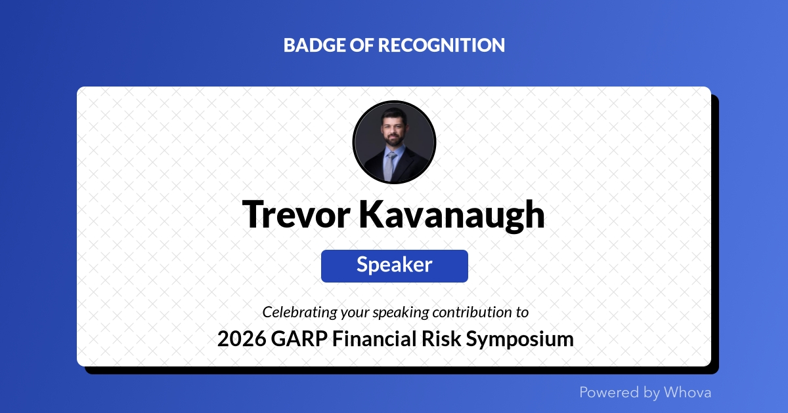

About
Building practical, scalable risk management frameworks for financial institutions.

Trevor Kavanaugh
With a background in software development and over a decade in banking, I've built my career across the risk spectrum - from compliance and BSA/AML to internal audit and third-party risk management. Most recently, I led the TPRM program at an FDIC-chartered regional bank, overseeing 600+ vendor relationships and bridging the gap between traditional vendor oversight and the technical realities of modern software dependencies. Today, I run Provenance Risk Advisory, helping financial institutions build TPRM and cyber supply chain risk programs that go deeper than compliance checklists.
My work challenges the conventional compliance-focused frameworks prevalent across financial services. The industry manages "parties" when it should be managing "dependencies"—the risks that exist beneath traditional vendor assessments: software supply chain vulnerabilities, nth-party dependencies, and the concentration risks created when institutions and their vendors converge on shared infrastructure.
I believe in building risk programs that find their own issues before auditors do. The program I built maintained an 8:2 ratio of self-identified control gaps to audit findings - we identified the substantial majority of our own issues before examiners discovered them. To me, that ratio is the clearest indicator of program maturity.
My goal is simple: help everyone do better.
Speaking & Recognition

2026 GARP Financial Risk Symposium | March 4, 2026
Third Party Risk Management and Developing a Resilience Playbook
Trevor joined a panel of senior risk leaders from CLS Bank, HarbourVest Partners, and Barclays to discuss identifying concentration risks in cloud and supply chain dependencies, evolving frameworks for the current threat environment, and proactive controls for organizational resilience.
Alongside Kelli Finnegan (SVP, HarbourVest Partners), Mark Frankel (Executive Director, CLS Bank), and moderator Matthew Moore (Director of Operational Risk, Barclays).
Let's Connect
Interested in discussing third-party risk management, exploring speaking opportunities, or collaborating on banking risk initiatives?